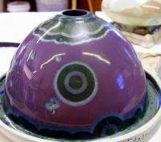
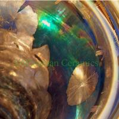

Note: This article is from Jesse Wiseman Hull’s website, now archived here.
This is still a fairly rough draft…
I have posted it sooner than planned because a friend (who was recently accepted into Alfred University –go Mark!) has asked me to cover some basics. I will probably be adjusting this post as I have the chance, so feel free to check back from time to time.
I’d like to start out with a suggestion on what not to do.
When I started with crystalline glazes almost 10 years ago, I made the mistake of seeking out as many recipes as I could, then testing all of them over and over. I spent several weeks mixing and creating tests just to load a kiln, and came to terms with the fact that “shotgunning” 30+ different bases doesn’t get you anywhere as fast as you think.
The main reason is that because there were so many glazes, I couldn’t focus on the consistency of each test. I may very well have had some wonderful glazes at any one point, and never known it because of the “sloppy science” that takes over when you overwhelm yourself with too much work and information.
So, the first thing I offer is to find a proven base and stay with it. Don’t move on until you figure a firing schedule that works, then make adjustments from there.
Keep in mind that erroneous results can be achieved within any step of the process, so stay sharp!
TO BEGIN
First, it is probably a good idea to understand how to read a glaze recipe.
Second, obtain enough of the basic ingredients (frit, zinc, silica, titanium) to cover several rounds of testing, and continue glazing other pieces beyond that. Make sure that you are using the same ingredients from the same air-tight container every time.
Third, hydrate your glaze using the correct amount of water.
Fourth, establish/check the specific gravity each time you mix a new batch. You also need to be sure that you have the same water content in your glaze every time you apply it to a test, whether you mix another batch or use the remaining glaze from a successful test.
Last, always verify that the peak temperature you think your controller is hitting is accurate –Go Here for more on this. You don’t need to adjust the controller (e.g., if your using a community/school kiln) if it’s not off by much, as long as you verify the peak at each firing. To do this, place a self-supporting cone in view of the spy hole and be there when your kiln approaches your predetermined top temperature.
Actually, I strongly suggest not ever relying completely on your controller … for testing or otherwise. When it’s time to move on, get another kiln, or simply replace the controller/thermocouples, all your notes will still make sense, because you fired to a cone rather than a digital display.
Below is a glaze that does well between ^8-10. The exact cone value depends on the crystal/background ratio you want, how thick you apply the glaze, whether you have a vertical, flat, or wide shouldered form, etc.
Ferro Frit 3110 or Fusion Frit 75: 51%
Calcined Zinc Oxide: 25%
325mesh Silicon Dioxide: 24%
Add:
Titanium Dioxide: 6%
CMC: 1-2%
Another recipe without titanium
(listed on P.141 in John Britt’s book Complete Guide to High-Fire Glazes ):
Ferro Frit 3110 or Fusion Frit 75: 51%
Calcined Zinc Oxide: 23%
325mesh Silicon Dioxide: 22%
Kaolin (Grolleg): 2.5
Alumina Hydrate: 1.5
When I fire tests, I use a thrown form such as this:

The form is 6 inches wide at the base, offering enough surface area to give you adequate information after firing, and provides the necessary reservoir for catching glaze run-off.
1- Apply glaze consistently on each test. By this I mean paying attention to the thickness as well as where you apply thicker layers on the test. The general rule I follow is 2mm on top 1/3 of test, 1-1.5mm on the rest of the form. I prefer spraying, and since you’re only using one or two glazes, it’s pretty painless.
2- Mark a pin or needle tool, using a file (paint/ink rubs off) in 1mm increments from its tip. Use it to test how thick the glaze is applied to each piece before firing.
3- Fire to peak, using a self-supporting witness cone (^9-10).
4- Keep detailed notes concerning all of these steps. BTW: If you don’t keep notes, don’t bother reading further, and feel free to forget everything you’ve already read -because, well… that’s what will eventually happen anyway… !
FIRING
Here is a recommended schedule:
Preheat @100F. Hold 30min - 1 hour (0.30-1.00).
Ramp 325F/hr to 2200F. Hold: 0.00
Ramp 108F/hr to 2348F. Hold until ^10 is reached.
If you use a self supporting cone, the tip should be level with the top of the triangular base.
If firing manually, shut the power off at this point and let the kiln cool as fast as possible to the first hold. If using a controller, most have the option to stop a hold using the “Skip Step” function. On my controller (Dynatrol/Bartlett V6-CF 700) this is done by inputing the keys: Review Segment-Enter-Enter. So to get my peak, I can program a hold at a slightly lower temperature for about 20 minutes. This time is excessive, which allows you a window of time to watch the cone bend to the correct angle and stop the hold.
You’ll have to learn the limits of your kiln. Here is the specially designed kiln that I fire with. Some kilns don’t cool as fast as others, so there may be enough residual heatwork to bend the cone past perfect. You’ll need to experiment with where you need the cone to be when you stop that stage of the firing, so that it achieves the perfect bend while the kiln is cooling.
After hitting your peak temperature, use this holding pattern to grow crystals:
Hold 1: 1985F for 2 hrs.
Hold 2: 1925 for 2 hrs.
Hold 3: 1985 for 2 hrs.
After the 3rd hold, shut the kiln off (or allow the controller to do it) and let the kiln cool naturally.
After examining the tests you can decide where to proceed. If you have too many crystals, slow the final ramp to peak. If too little, increase that rate of climb. Try this before you alter the glaze base. Understand that increasing/decreasing that rate will change the temperature you need to achieve to bend the same cone.
CREATING REFERENCES
Once you’ve established the right firing cycle, I recommend that you continue in this way:
Take the base glaze and calculate each of the three main ingredients (frit, zinc, and silica) up and down by 3-4%. Mix and fire these tests in the same specific manner you did for the original glaze. These will probably not be all that nice, but keep these tests as reference, as they will be invaluable when trying to solve problems or proceed in the future.
Lastly, try adding colorants.
Cobalt at 1-3%, Iron at 1-5%, Copper at 1-6%, Nickel at 1-3%, etc.
Don’t let this small example list or the percentage limits above keep you from exploring further. I’ll write more on this in another post later.
FINALLY …
I have volumes of journal entries and firing notes leading me to the point I’m at now, and I am constantly reminded of how I’ve only scratched the surface.
As such, there is little way I can show you the limits of glaze testing beyond what is listed above, and I really have no desire to steal your own potential. A unique experience is the best way to succeed and have your work stand out.
The last thing I’ll leave you with is, have fun! If you learn to enjoy the process, your failures will have less of an impact, and your successes will become stepping stones on an amazing journey.
